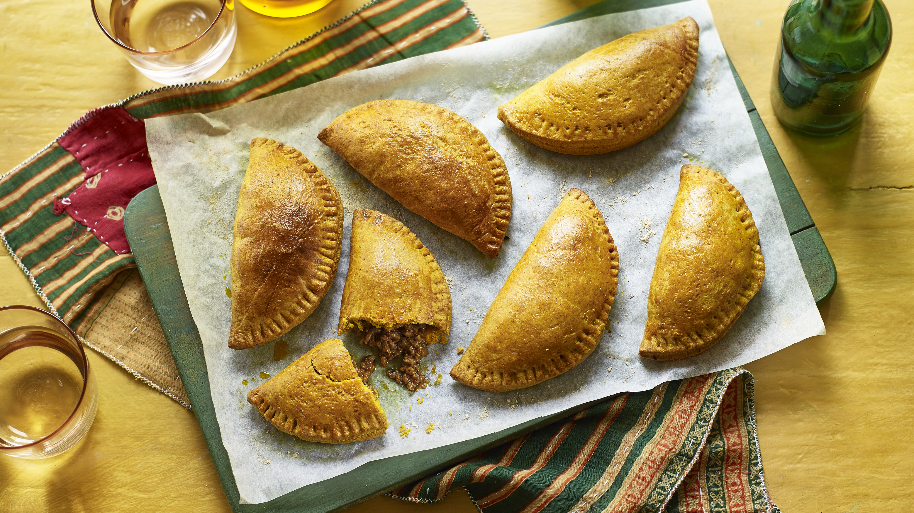

Although pies filled with meat are popular in many countries throughout the world as a great way to turn cheap cuts of meat into savory bites and making sure that no food goes to waste, Jamaican meat patties are enhanced with unique African and Indian touches.
Meal prep time : 55 minutes
Servings : 5